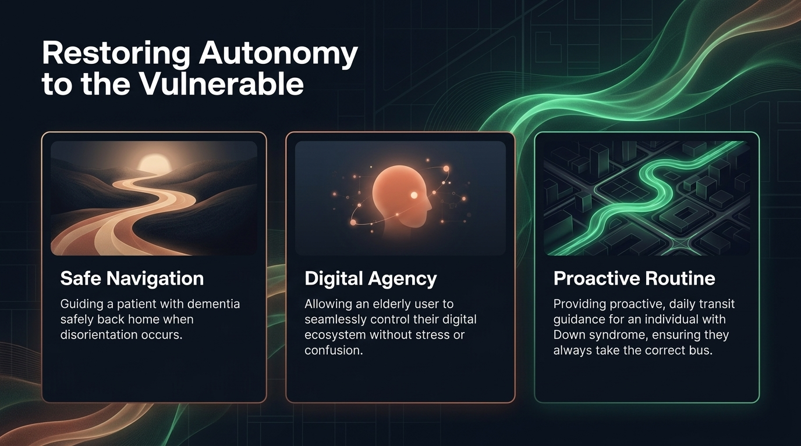
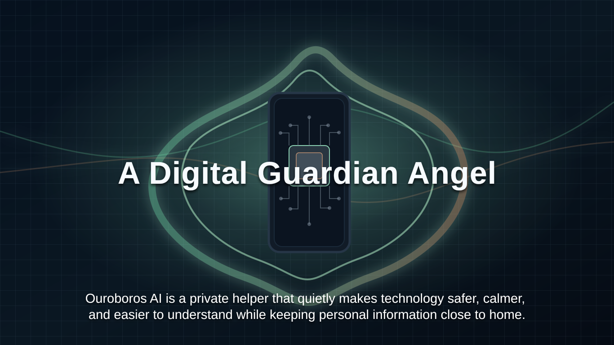

Repère tôt
Les petits problèmes sont plus faciles à régler avant qu’ils deviennent une panique.
Gardien numérique privé
Ouroboros AI est un assistant technologique privé pour les personnes qui trouvent la technologie trop compliquée. Il aide calmement avec le téléphone et l’ordinateur, règle les petits problèmes tôt, et garde les informations personnelles sur votre propre appareil.

Qu’est-ce qu’Ouroboros ?
Ouroboros veille aux problèmes sur votre propre appareil. Il peut repérer une alerte confuse, une application bloquée, un réglage étrange ou un clic risqué avant que la journée devienne stressante.
Il ne fait pas sentir les gens petits. Il explique ce qui se passe avec des mots simples. Il aide doucement, étape par étape, et laisse la personne garder le contrôle.
Les petits problèmes sont plus faciles à régler avant qu’ils deviennent une panique.
Pas de reproche. Pas de mots compliqués. Juste une aide claire au bon moment.
Le but est l’indépendance, la dignité et une relation plus calme avec la technologie.

Comment ça aide
Quand un téléphone, une tablette ou un ordinateur semble impossible à comprendre, Ouroboros rend le moment plus petit, plus sûr et plus clair.
Les pop-ups suspects, les alertes fortes et les messages étranges peuvent être traités avec calme.
Il peut aider avec les réglages simples, les écrans bloqués et les problèmes quotidiens.
Il utilise un langage clair, pour que personne ne se sente bête de demander de l’aide.
Il peut soutenir les habitudes, les rendez-vous et les gestes numériques familiers.
Les enfants adultes ont plus de tranquillité sans devoir tout prendre en charge.
La promesse n’est pas plus d’écrans. C’est moins de stress.


Pour les familles
Beaucoup de familles connaissent cette scène. Un parent appelle parce que le téléphone fait quelque chose d’étrange. Il est inquiet. Vous essayez d’aider à distance. Tout le monde raccroche fatigué.
Ouroboros est fait pour cet écart. Il donne une assistance informatique senior douce au bon moment, et vous donne plus de paix d’esprit à distance.
Ils peuvent continuer à utiliser leurs appareils sans se sentir surveillés ou jugés.
Les petits problèmes peuvent être réglés avant de devenir des urgences familiales.
L’aide doit protéger l’indépendance, pas la retirer en silence.
Confidentialité et sécurité
Ouroboros est conçu pour que les informations personnelles restent sur l’appareil. Vos habitudes, vos inquiétudes, vos signaux de santé et vos moments de famille ne devraient pas être collectés, vendus ou envoyés ailleurs pour que l’aide fonctionne.

Les données les plus personnelles restent locales, près de la personne à qui elles appartiennent.

Une vie privée ne doit pas partir dans de grands systèmes parce qu’une personne a besoin d’aide.

Les étapes importantes demandent des règles claires, des contrôles attentifs et une permission humaine si nécessaire.

Le gardien numérique soutient les personnes. Il ne remplace pas la famille, le soin ou le choix.
Pour qui ?
Ouroboros est fait pour celles et ceux qui veulent une technologie plus sûre, plus simple et plus humaine.
Des personnes qui veulent rester indépendantes, mais sentent que les téléphones et ordinateurs vont trop vite.
Des familles qui cherchent une aide informatique pour seniors, calme, respectueuse et privée.
Toute personne qui veut un assistant technologique privé sans confier sa vie aux grandes plateformes.

Prochaine étape
Commencez par un vrai problème : un parent dépassé, une famille inquiète, ou un appareil qui crée du stress chaque semaine.